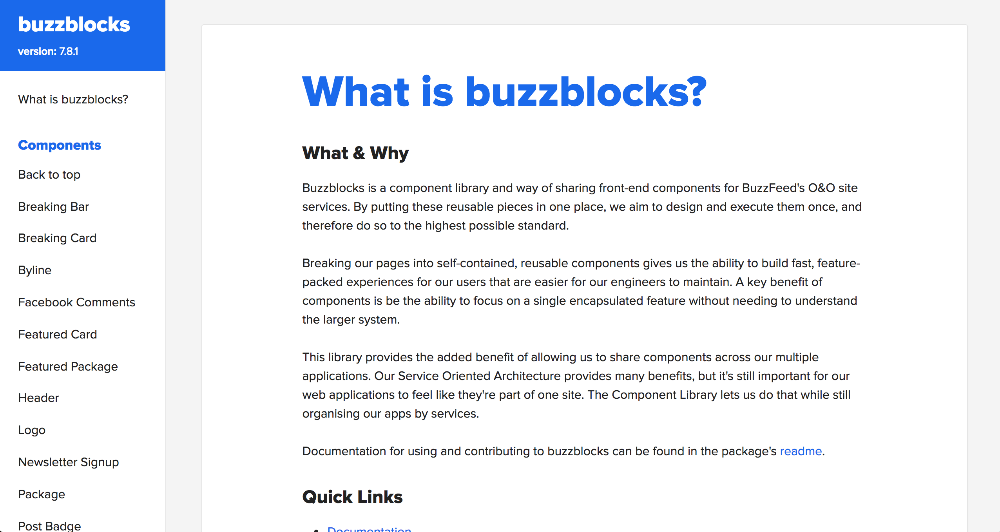
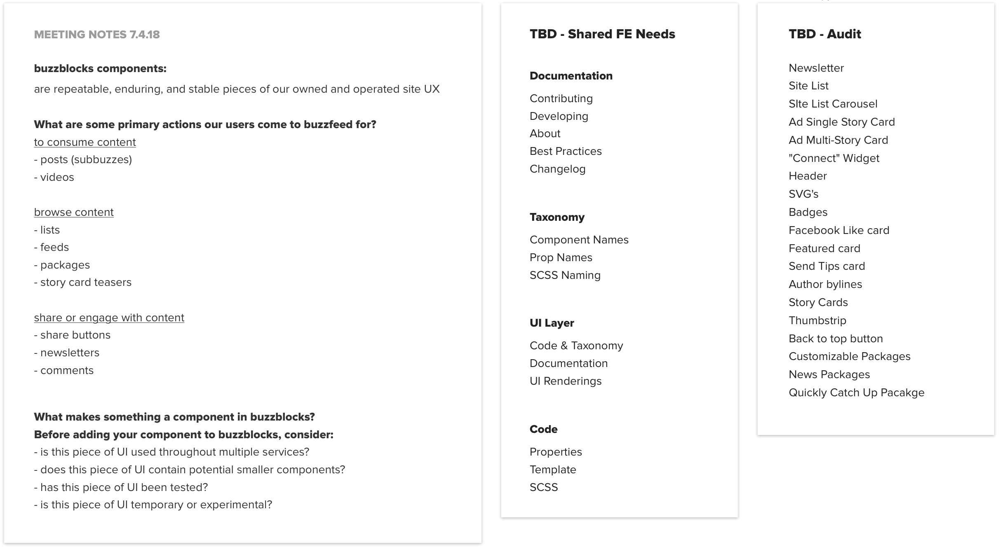
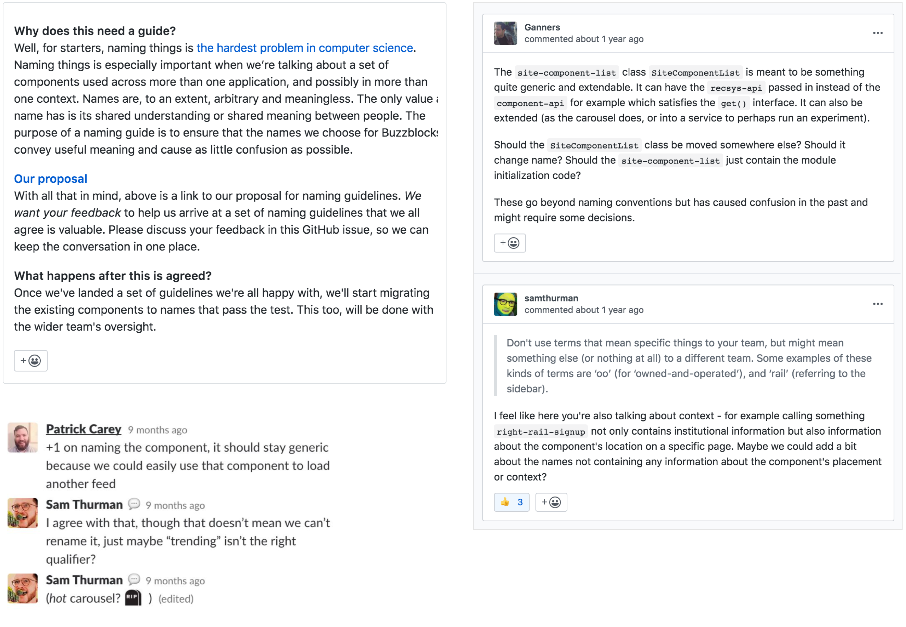
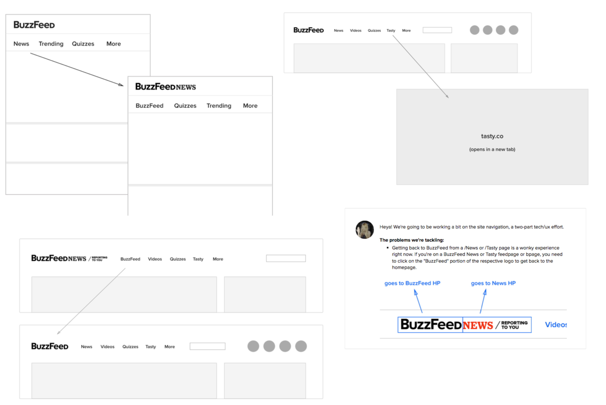
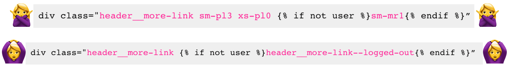
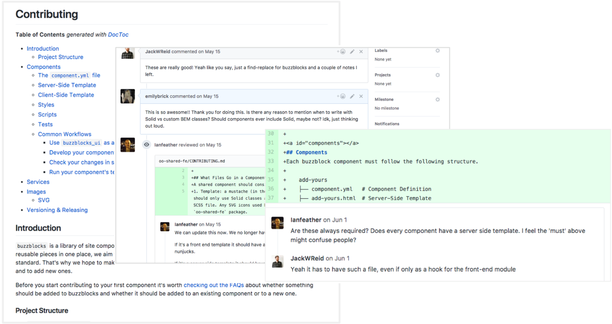
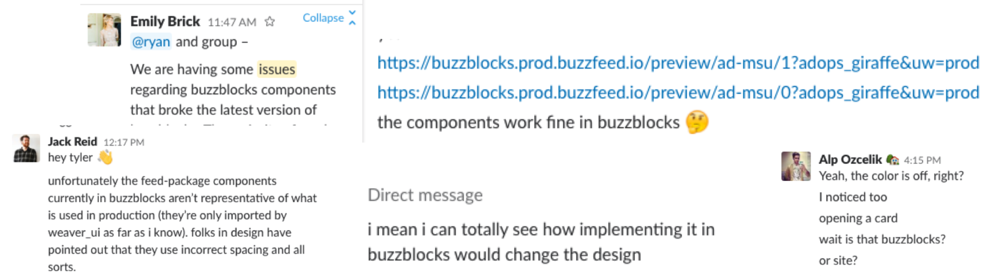
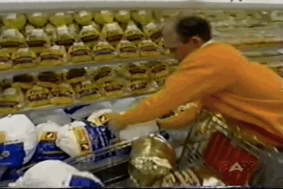
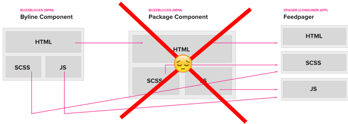

Building Buzzblocks: a BuzzFeed Component Library
As much as I'd love to explain this briefly – the truth is – it’s a heck of a lot to talk about. But I can promise you that this is my best shot. If you’re interested in the extensive case study, please reach out (but be warned – it's lengthy).
Starting Out
We spent the better half of 2017 tackling a problem that had been lurking underneath the surface at BuzzFeed since we introduced the idea of microservices back in 2016: shared components.
The project started out like any other ambiguous systems project: with a ton of questions. We documented our pain points, researched how other companies handled similar challenges and wrote up some loose proposals for how to get started.
Early notes on categorizing, identifying, and building components
Problems & Goals
At a very high level, there were a few pretty solid reasons to create a shared component library:
- We didn’t have a great way to share UX across different experiences
- We were wasting time trying to reinvent the wheel
- The majority of the consumer-facing site was still in the legacy stack, with not enough resources to rebuild every page in the new stack

Only our highest trafficked pages were in the new stack; our older pages were still considered legacy. Navigating from the homepage to an older page, such as BuzzFeed Animals, often meant experiencing this jarring header jump.
Though we knew the future was uncertain, we tried to set goals in place that were attainable yet open to change:
- Build a living gallery to host and document components
- Aim to serve a sustainable consumer site and allow room for intentional experimentation.
- Complete the website redesign and technical migration
Setting Up for Transparency
Due to the nature of the project, we wanted to be as transparent as possible. We started a Slack channel with weekly pinned updates, roping in engineers from other teams into PR’s and Issues, and posted our findings on Basecamp as well. Having so many avenues open for feedback and collaboration was essential to us since ultimately the success of the library was dependent on the folks who were to adopt it in their day-to-day work.
Pinning weekly Slack updates was the easiest way to be transparent early on
We (very loosely) came up with some guidelines for what constitutes a component; the component must present a current or near-future need to be shared the component must be a “tried and true” piece of core UX. That is, not experimental, temporary, custom, or considered “legacy”.
Once we determined the first working definition of a component, we started putting other guidelines in place. We used GitHub issues and Slack to manage these conversations in an open environment; such as naming components and how they should be structured.
As it turns out, naming is hard.
Building the First Component: A Trial and Error Approach
After we came up with loose guidelines (or a working definition, if you will) for what a component should be, we decided to learn by doing and build a “guinea pig” component in the library. The BuzzFeed header was already top of mind as it was difficult to keep in sync across the site. When someone made a change to the header, they needed to update it in every single service. This meant a lot of unintentional inconsistencies slipped through the cracks.
At the same time, the header had accrued design debt over the years but didn’t fall on any specific product teams’ plate. It made sense for us to tackle those issues with the technical refactor.
Moving the header into a shared component library meant tackling two birds with one stone: cleaning up the header IA while refactoring the code
Working with a “guinea pig” component to suss out difficulties proved fruitful very fast. For example, we initially wrote a combination of BEM (component-specific) styling along with Solid (atomic styling) to style each component variation. We learned very soon after that it was very, very confusing to read and even more confusing to edit.
BEM FTW in this scenario. Atomic styling made sense outside of components, but we wanted isolated styling and decided to utilize Solid’s variables inside scoped BEM classes instead.
With the help of a few volunteers, we wrote our first draft of contributing and developing documentation based on how we built and shipped the shared header.
We also worked quickly to get the first iteration of the component gallery up and running. We put the work in Basecamp and held discussions over Slack & GitHub for feedback and progress.
Learning & Refining
We documented some hiccups we ran into along the way when building the header, such as the benefit of breaking up templates, when to fork vs. modify, and (as mentioned above) the value of sticking with BEM conventions
We also talked to engineers who were beginning to experiment with the library to get their feedback. A few initial improvements that came out of the feedback:
- Automated NPM publishing
- The ability to publish test versions without pushing to master
- The ability to run buzzblocks components locally within a service
- Documenting common workflows, such as integrating a Buzzblocks into your service, and adding a Buzzblocks component (instructions tailored for designers and developers)
- Design and gallery improvements included dedicating a page to each component, configuration tables and example configurations, and links to see each component variation in isolation.

Addressing New Challenges
While we began implementing a lot of these improvements, we noticed a trend happening. While we made it quite easy for people to contribute new components to the library, we didn’t make it easy to know when and if they should add new components to the library.
We also noticed that components added were not well-defined in the gallery and were often missing the proper context for use. We hadn’t enforced any rules or guidelines around documenting components. We wrongfully assumed our (well-intentioned!) engineers would be lead by our not-so-obvious examples.
To put it briefly, the low barrier to contribute to Buzzblocks led to inevitable bugs and overseen discrepancies in production.
Getting to the Bottom of It
We spent a lot of time discussing the issues to get to the root of the problem and ultimately decided to (at least initially) take more responsibility for the individual components themselves, rather than just maintaining the library and framework.
Taking more responsibility for the components themselves would allow us to learn more about why these issues were occurring, and how we could avoid them in the future. It would also give us an opportunity to set a better precedent so that folks contributing to the gallery in the future had strong examples and best practices to lean on.
Fast forward a couple weeks of investigation, refactoring, and discussion, we uncovered a few common themes to back-up the challenges we were facing...
False positives: Components weren’t always representative in the gallery’s sandbox and prototyping environment. This was sometimes a result of “hidden” styling that existed only in a consumer service, and not in buzzblocks. False positives happened a lot when “migrating” components to buzzblocks from a service. Moving things from one place to another meant things easily got left behind (accidentally!).
Migration Expectation
Migration Reality
Unknown Unknowns: With the multiplication of services and pages, it was hard to know where a specific component lived. It became difficult to run regression tests for all the different configurations of a component across multiple services.
For example, a straightforward update to our story component turned out to have broken the entire feed on the BuzzFeed Shopping page, due to hidden service-specific dependencies. Who’da thunk it.
Encapsulation Styling bugs resulted from the gallery having one large (ahem, shared) compiled CSS file of all component-specific styling. Styling would cascade down from one file to another, giving a false impression of what was affecting what.
The compiled Buzzblocks gallery CSS file didn’t match up any specific service’s compiled CSS file, creating a disparity between the two services. This was also the case for our Javascript.

An actual visualization of Cascading Stylesheets
Building It Again, And Then Again
The most straightforward and effective way we could mitigate these risk factors were to build isolated components.
What does that mean? We decided that we were no longer going to share SCSS or JS across multiple components unless they share enough likeness.
Why? We took this route because self-contained and self-reliant components (from both a stylistic and engineering standpoint) are more predictable, stable, and easy to test.
This also meant that we would stop using components inside of other components. The framework didn’t allow for composability in the ways that we needed to feel comfortable importing partials.
Learnings
Ideally, we wanted to build a system that could support composability and encapsulation. However, the reality of the situation was that, due to lack of encapsulation options with our frontend stack, isolated components were the safest bet. This resolution was disappointing but allowed us to move forward and create a valuable system for our existing framework.
A house is only as strong as its foundation(IDK, it felt right in the moment. I’ll work on my idioms). We bent our frontend framework so far it broke. It wasn’t meant to host components the way that we were previously integrating them. The components weren’t encapsulated by nature, but we could isolate them to the best of our ability to make them more manageable and less risk-prone.
Know when to take ownershipTaking on the components themselves built up confidence and helped to inform documentation we felt confident about sharing. Following through and making sure the documentation still made sense in practice was key.
It’s never finishedThere are still quite a few things that aren’t “there” yet. We’re not confident saying this is the best library that it could be. What we are aligned on is the things we need to do to make it better.
So...what is a component for Buzzblocks?
After trying, and trying again, and again...we rehashed our component "definition" to reflect our learnings and practices better.
- Isolated; the component must be self-contained
- Context-agnostic; the component must live independent of a particular location
- Logical; there is a clear reasoning for this component to live in a shared library and its name & description is self-explanatory
We reworked our documentation, this time, with loads more confidence then before. We also added a "checklist" to sanity check whether or not a component makes sense to live within the buzzblocks library.
At the end of the day, Buzzblocks components make up a significant chunk of our primary consumption experience:
After we felt confident and comfortable with the state of things, we (once again) encouraged contributions from the rest of the engineering team. Ultimately, Buzzblocks became the responsibility of the feature teams at BuzzFeed who implemented them. We continued to have a working group of Buzzblocks "maintainers" that was available for questions or framework improvements.
Aside from the front-end framework limitations, we identified several opportunities for improvements in the future. For starters, per component versioning would solve a lot of pain points when introducing changes to the library. Additionally, several both engineers and designers voiced a need for context around a component's usage (that is, which services it lives in and the version it was last updated). Regarding design best-practices, we barely scratched the surface of what a component library can do to influence a product's ecosystem.
Although the project was tightly scoped, I am genuinely impressed by the engineering and design folks who embraced this library and new workflow with so much enthusiasm and understanding.